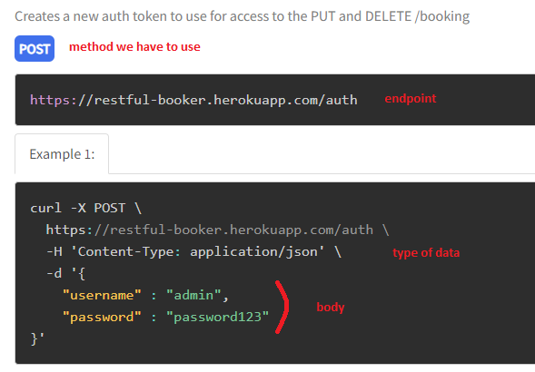
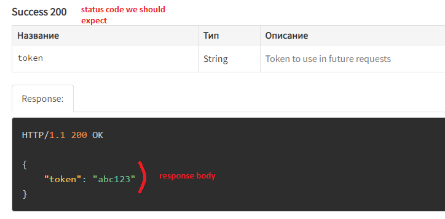
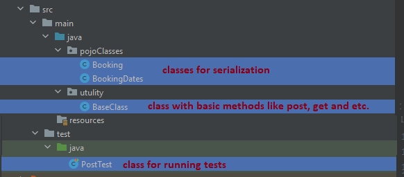
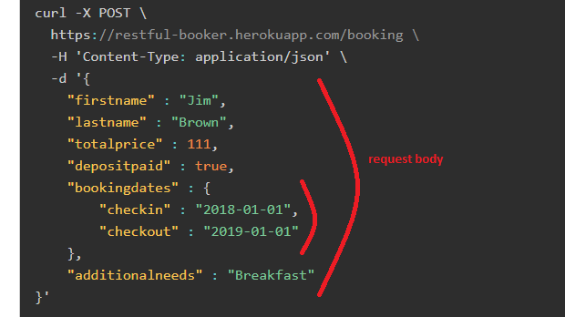

Api (Application Programming Interface) is the way how 2 or more application can exchange information with each other. I will use API from the site https://restful-booker.herokuapp.com/ because it was created for testing and education purposes. API is described here https://restful-booker.herokuapp.com/apidoc/index.html
Prerequisites: I use Java 11, IntelliJ IDEA, Maven project
Examples of code could be downloaded here
< dependency>
< groupId>com.jayway.restassured< /groupId>
< artifactId>rest-assured< /artifactId>
< version>2.9.0< /version>
< /dependency>
< dependency>
< groupId>com.jayway.restassured< /groupId>
< artifactId>json-path< /artifactId>
< version>2.9.0< /version>
< /dependency>
< dependency>
< groupId>com.jayway.restassured< /groupId>
< artifactId>json-schema-validator< /artifactId>
< version>2.9.0< /version>
< /dependency>
< dependency>
< groupId>javax.xml.bind< /groupId>
< artifactId>jaxb-api< /artifactId>
< version>2.3.1< /version>
< /dependency>
also I use testNg for starting tests and lombok for generate getters and setters automatically
< dependency>
< groupId>org.testng< /groupId>
< artifactId>testng< /artifactId>
< version>7.5< /version>
< /dependency>
< dependency>
< groupId>org.projectlombok< /groupId>
< artifactId>lombok< /artifactId>
< version>1.18.24< /version>
< /dependency>
API tests could be built in different ways, but there are the same methods in basis, that could be read like story: given URI and may be some header or a body we want to send, when we make a request, for example get or post, then we want to check the status code in response.
For runnung the simplest API test:
It takes base URI https://restful-booker.herokuapp.com and makes a GET request to the endpoint "/ping", so the full URL in request = https://restful-booker.herokuapp.com/ping. Then the test checks that status code in response is 201, according the requirements.
import static com.jayway.restassured.RestAssured.*;
public class EndpointsTests {
@Test
public void pingTest() {
given()
.baseUri("https://restful-booker.herokuapp.com")
.when()
.get("/ping")
.then()
.assertThat()
.statusCode(201);
}
}
Usually API tests are more complicated. To create a resourse on a server we need to send some data in request, this data could be in different formats, for example Json, Xml or an object. POST and PATCH requests require we specify the type of data we send, for example for Json - contentType(ContentType.JSON).
Also we can log our requests and responses to see what happens with a help of log().all()
Let's create a token that we will send in some requests. It could be found in IDE console after running the test "createToken". As this is the website for education purpose all created data are deleted frome the server each 10 minutes.
In request requirements we have:

In response requirements we have:

Example of POST request to create token is below.
As the response is very simple and data in json is kept in key-value pairs, to get token id I just specify the name of the key "token" and get the value - the token id itself. Token will be printed in console, save it for future requests.
import com.jayway.restassured.RestAssured;
import com.jayway.restassured.http.ContentType;
import com.jayway.restassured.response.Response;
import org.testng.annotations.Test;
import org.testng.asserts.SoftAssert;
import utulity.Url;
import static com.jayway.restassured.RestAssured.given;
public class PostTest {
@Test
public void createToken() {
RestAssured.baseURI = "https://restful-booker.herokuapp.com";
Response response = given()
.when()
.contentType(ContentType.JSON)
.body("{\n" +
" \"username\" : \"admin\",\n" +
" \"password\" : \"password123\"\n" +
"}")
.post("/auth")
.then()
.assertThat()
.statusCode(200)
.log()
.all()
.and()
.extract()
.response();
String token = response.path("token");
System.out.println(token + " - This is a token you need to save");
}
}
Serialization and deserialization is quite a big topic and will be described separately. In two words serialization is a creation of Java class/classes based on a Json, so we can send an object in body() method instead of a big String. After all preparation, described below, the structure of a project might looke like:

To create a booking we have to send some data. Pay attention that there is a small Json inside a big Json. All Json keys will be Java class parameters. Each Json will be described in a separate class.

So we will have a class "Booking" and a class "BookingDates". I use annotation @Getter and @Setter for automation creation of getters and setters. In "Booking" class:
import lombok.AccessLevel;
import lombok.Getter;
import lombok.Setter;
@Getter
@Setter
public class Booking {
private String firstname;
private String lastname;
private int totalprice;
private boolean depositpaid;
private String additionalneeds;
BookingDates bookingdates;
public Booking addBookingAllFieldsFilled(String firstname, String lastname, int totalprice, boolean depositpaid, String additionalneeds, String checkin, String checkout) {
//here the booking itself is created
Booking booking = new Booking();
booking.setFirstname(firstname);
booking.setLastname(lastname);
booking.setTotalprice(totalprice);
booking.setDepositpaid(depositpaid);
booking.setAdditionalneeds(additionalneeds);
//here dates of booking are created and added to the booking
BookingDates bookingDates = new BookingDates();
bookingDates.setCheckin(checkin);
bookingDates.setCheckout(checkout);
booking.setBookingdates(bookingDates);
return booking;
}
}
A class for dates:
import lombok.Getter;
import lombok.Setter;
@Getter
@Setter
public class BookingDates {
private String checkin;
private String checkout;
}
Now we move all common code from @Test method to the class "BaseClass" not to type each time given().when().then(). There we create a method "postRequest" with parameters for specifying an endpoint, a body as an object. Indicate the ContentType and call post() method. Also response is returned as an object, thus we can get data from it. Notice that the method has to be static not to create an object of BaseClass.
import com.jayway.restassured.RestAssured;
import com.jayway.restassured.http.ContentType;
import com.jayway.restassured.response.Response;
import com.jayway.restassured.specification.RequestSpecification;
import pojoClasses.Booking;
public class BaseClass {
public static Response postRequest(String endpoint, Booking booking) {
RequestSpecification requestSpecification = RestAssured.given().body(booking);
requestSpecification.contentType(ContentType.JSON);
Response response = requestSpecification.post(endpoint);
return response;
}
}
In test class:
import com.jayway.restassured.response.Response;
import org.testng.annotations.Test;
import org.testng.asserts.SoftAssert;
import pojoClasses.Booking;
import utulity.BaseClass;
import utulity.Url;
import static utulity.Constants.ErrorMessages.*;
public class PostTest {
String endPoint = "https://restful-booker.herokuapp.com/booking";
@Test
public void createBooking() {
Booking body = new Booking();
body = body.addBookingAllFieldsFilled("Diana", "Round", 6, true, "pijamas", "2022-08-04", "2022-08-08");
Response response = BaseClass.postRequest(endPoint, body);
Assert.assertEquals(response.path("booking.firstname"), body.getFirstname());
response.prettyPrint();
}
}
Now @Test methods is more readable and shorter, easy to maintain.
In a class "BaseClass" create a basic method for deletion booking.
import com.jayway.restassured.RestAssured;
import com.jayway.restassured.http.ContentType;
import com.jayway.restassured.response.Response;
import com.jayway.restassured.specification.RequestSpecification;
import pojoClasses.Booking;
public class BaseClass {
public static Response deleteRequest(String endPoint, String token) {
RequestSpecification requestSpecification = RestAssured.given();
requestSpecification.contentType(ContentType.JSON);
requestSpecification.cookie("token", token).log().all();
Response response = requestSpecification.delete(endPoint);
return response;
}
}
In @Test method first of all we need to create a booking and then to delete it.
import com.jayway.restassured.response.Response;
import org.testng.Assert;
import org.testng.annotations.Test;
import pojoClasses.Booking;
import utulity.BaseClass;
import utulity.Url;
import static utulity.Authentication.getToken;
import static utulity.Constants.ErrorMessages.STATUS_CODE_IS_NOT_RIGHT;
public class DeleteTest {
String endPoint = "https://restful-booker.herokuapp.com/booking/";
@Test
public void deleteBooking() {
Booking body = new Booking();
body = body.addBookingAllFieldsFilled("Diana", "Round", 6, true, "pijamas", "2022-08-04", "2022-08-08");
Response response = BaseClass.postRequest(endPoint, body);
//get id of created booking as we need it to specify it in delete request
endPoint = endPoint + response.path("bookingid");
Response responseAfterDeletion = BaseClass.deleteRequest(endPoint, "YOUR TOKEN IS HERE");
Assert.assertEquals(responseAfterDeletion.getStatusCode(), 201);
}
}
Summary:
1 – API tests faster to create and run, and more stable then UI tests
2 – There are different approaches how to build them and what libraries to use